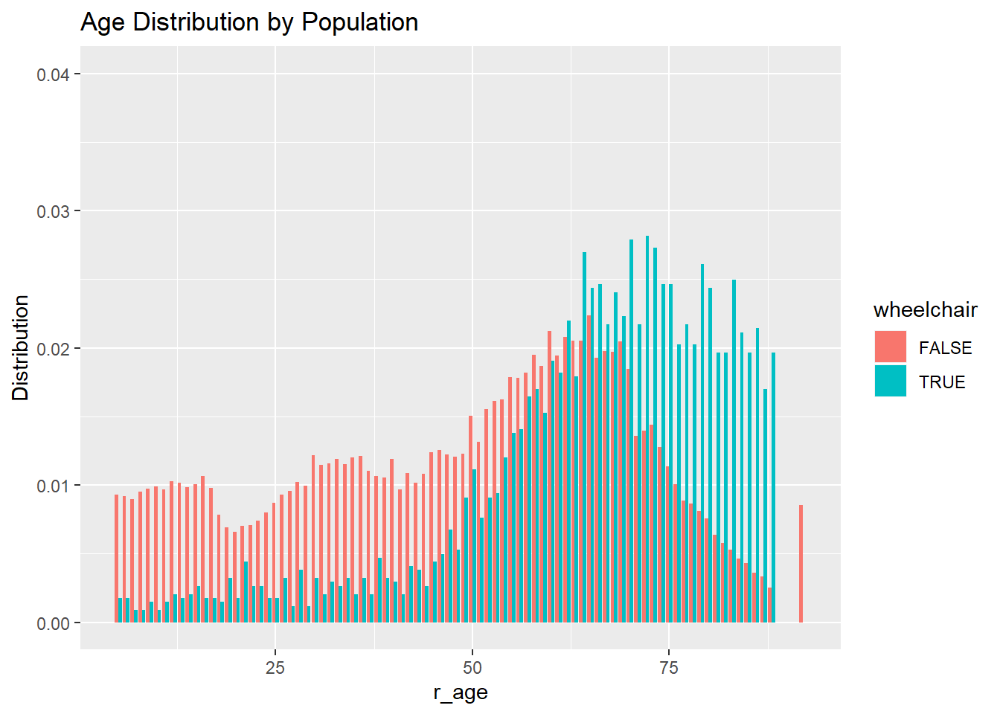
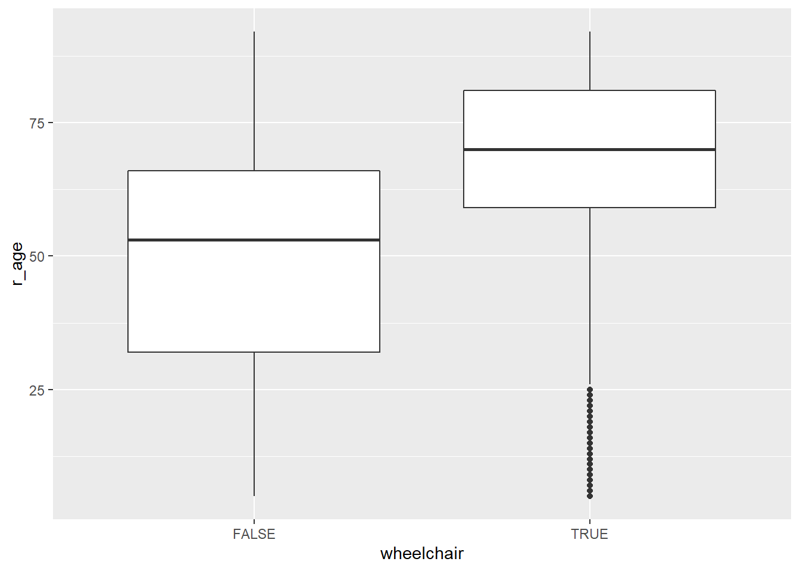

The purpose of drawing conclusions from the NHTS is to provide better transportation–more accessible, safer, faster, etc.–by understanding the transportation patterns of the U.S. citizens.
This page will display the information found in the 2017 NHTS and compare the population of wheelchair users to the able-bodied population.
In this analysis I use the metric of distribution of relative population. For example \[ wheelchairpercentage = \frac{counts}{wheelchairpopulation} \] \[ abledpercentage = \frac{counts}{abledpopulation} \]
Of the U.S. population, it is reported that only ____ percent use wheelchairs. This is approximately ___ hundered americans.
nhts_persons %>%
mutate(wheelchair = ifelse(w_chair == "07" | w_mtrchr == "08", TRUE, FALSE)) %>%
group_by(wheelchair) %>%
tally() %>%
mutate(percent = n/sum(n),
responses = n) %>%
select(-n)## # A tibble: 2 x 3
## wheelchair percent responses
## <lgl> <dbl> <int>
## 1 FALSE 0.987 260824
## 2 TRUE 0.0129 3410Let’s look at how wheelchair users are distributed by age. This can be confusing as it looks like there are more wheelchair users than abled bodies at age 75, but remember it is distribution of wheelchair users to total wheelchair users.
# histogram comparing both abled and wheelchair users.
nhts_persons %>%
mutate(wheelchair = ifelse(w_chair == "07" | w_mtrchr == "08", TRUE, FALSE)) %>%
group_by(wheelchair, r_age) %>%
tally() %>%
filter(r_age > 0) %>%
mutate(Distribution = n/sum(n)) %>%
ggplot(aes(x = r_age, y = Distribution)) + geom_col(aes(fill = wheelchair), position = "dodge") +
ggtitle("Age Distribution by Population") +
ylim(0, 0.04)## Don't know how to automatically pick scale for object of type haven_labelled. Defaulting to continuous.## Warning: Removed 1 rows containing missing values (geom_col).
# histogram just showing distribution of wheelchair users by age group# Show boxplot of age distribution with age on y axis and wheelchair boolean on the x
nhts_persons %>%
mutate(wheelchair = ifelse(w_chair == "07" | w_mtrchr == "08", TRUE, FALSE)) %>%
group_by(wheelchair, r_age) %>%
filter(r_age > 0) %>%
ggplot(aes(x = wheelchair, y = r_age)) + geom_boxplot() ## Don't know how to automatically pick scale for object of type haven_labelled. Defaulting to continuous.